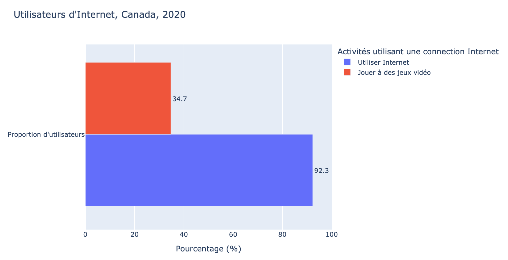
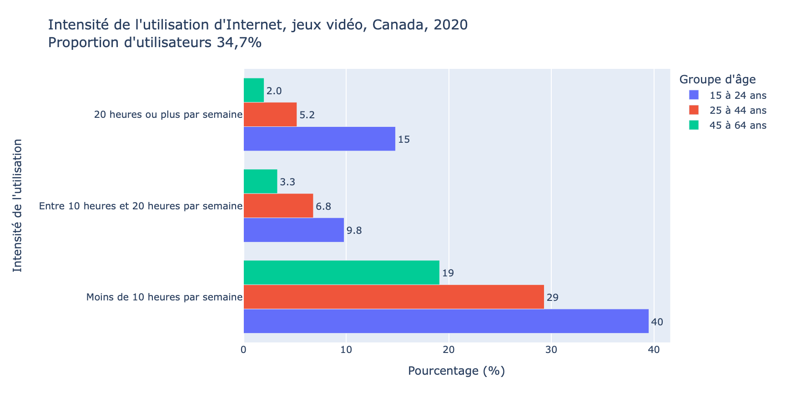

French 1: Module 2 - Connect
Interpret
Data on internet usage | Les données sur l'utilisation d’Internet
Utilisateurs d'Internet, Canada, 2020
Source: Statistique Canada. Tableau 22-10-0136-01. Intensité de l'utilisation d'Internet, des services de diffusion vidéo en continu et des services de jeux vidéo selon le genre, le groupe d'âge et le plus haut certificat, diplôme ou grade obtenu.
Visualisation: plotly.py is licensed under the MIT license
|
Ceci est un diagramme à barres qui montre les pourcentages des activités utilisant une connexion Internet au Canada en 2020. 92,3% des répondants utilisent Internet pendant que 34,7% jouent à des jeux vidéo sur Internet. Il y a moins d'utilisateurs qui utilisent les jeux vidéo en ligne que l'Internet en général. |
Note that the percentages take on a plural subject with a verb conjugation that is plural.
Also note that the percentages indicated on the bar chart use decimal points instead of commas, which are applied in French. In French, the decimals would read 34,7% and 92,3%. This chart was generated using a computer programming language. Computer programming languages are still largely based in English using the comma in other ways.
Intensité de l'utilisation d'Internet, jeux vidéo, Canada, 2020
Complete the table by listening to the percentages for each age group (groupe d'âge).

Visualisation: plotly.py is licensed under the MIT license

Description: Intensité de l'utilisation d'Internet, jeux vidéo, Canada, 2020
Ceci est un diagramme à barres qui montre les pourcentages de l'intensité de l'utilisation d'Internet, jouant à des jeux vidéo, par groupe d'âge au Canada en 2020. La proportion d'utilisateurs d'Internet qui joue à des jeux vidéo sur Internet est 34,7%.
© Durham College. All rights reserved.